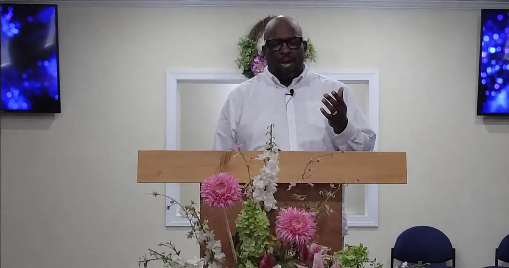

Co-Founder
Co-Founder & Ministry Lead
Dexter A. Graham
Dexter is a husband to Kenya, a father, Bible teacher, mentor, and ministry leader. He serves through Bible studies, men’s discipleship, mentoring, creative resources, and church media, always seeking practical ways to help people know Jesus and live out their faith.
His years of serving others, working in the technical field, and walking through dialysis have taught him that God meets people in ordinary responsibilities and difficult seasons. No Labels, Designed by God grew from his conviction that no mistake, struggle, diagnosis, background, or label gets the final word over a person’s life. Our truest identity and purpose are found in Jesus Christ.
“I do not have all the answers. I am someone learning to follow Jesus faithfully and helping others discover that their identity begins with the God who created them.”